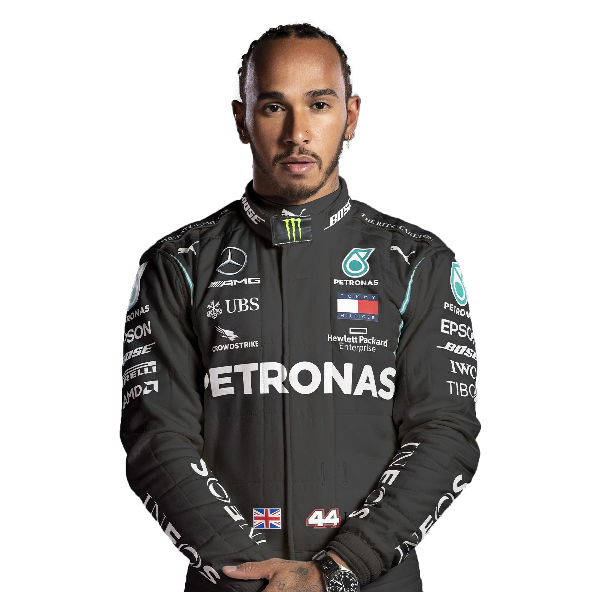

- Lewis Hamilton is one of the most successful drivers in Formula 1 history, combining elite race pace with consistency, tire management, and exceptional qualifying speed.
- His career has stretched across McLaren, Mercedes, and Ferrari, showing his ability to adapt to different teams, rule eras, and championship battles.
- His records include 7 World Championships, 105 Grand Prix wins, 104 pole positions, and more than 200 podium finishes.
Lewis
Hamilton

- Ferrari — 7-time World Champion
- 2007–2012 (McLaren), 2013–2024 (Mercedes), 2025–Present (Ferrari)